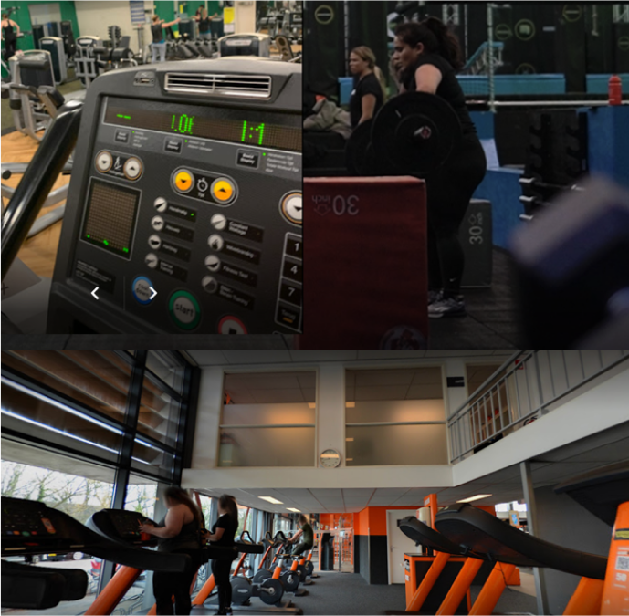

Explore those place where you can
fit your Body 🔎
Follow Some Rules Get Better Life
THE BEST FITNESS TIPS!

Learn ways to Fit
Your Body 🚅
Explore those place where you can
fit your Body 🔎
Learn ways to Fit
Your Body 🚅
Appropriate nutrition is essential for the proper performance of exercise. In particular, correct nutrition is critically important for improvement of athletic performance, conditioning, recovery from fatigue after exercise, and avoidance of injury. Although athletes need to eat a well-balanced basic diet, there are several nutritional factors that are difficult to obtain at a sufficient level from a normal diet since athletes require more nutrients than the recommended daily allowances.
Several natural food components have also been shown to exert physiological effects, and some of them are considered to be useful (when ingested at high doses or continuously) for improving athletic performance or for avoiding the disturbance of homeostasis by strenuous exercise. Recently, food components with physiological actions have been called "functional foods" and the effects of such foods have been scientifically investigated. This website introduces some functional foods, including basic nutrients, which have been demonstrated to have a beneficial influence on the physiological changes that occur during exercise.
Exercise daily for at least an hour. You do not have to kill yourself from running, jogging, etc., but you should have some sort of moderate physical activity in your everyday life. If you're looking to shed a few pounds fast, do a higher-level intensity workout. For example, go on a walk at a brisk pace for an hour.
No matter how bad your stomach is telling you to go for candy over healthy food, try to stay away from sweets. Sugar from candy will not help you get in shape. Even if it's just a single candy bar, one will eventually lead to another. Fruits and vegetables are the best thing to eat when getting into shape. Apples, for example, do a good job at making the stomach feel full for up to 3 to 4 hours. Green vegetables such as green beans and broccoli keep the digestive system clean and running. Also, stick to lean meats like turkey and chicken. Seafood, such as, shrimp, and tilapia are also great alternatives. These foods are full of protein and healthy nutrients to help keep muscles fit and ready for workouts.
Even though most of us have eight-hour jobs during the day or night, it is crucial to get enough sleep to recharge the body's batteries. Six to eight hours of sleep will keep the body going throughout the day, but if you happen to feel tired at any point after coming home from work, by all means take a small nap before exercising. You should only nap for about a half hour. This will prevent you from staying up later in the night.
Keeping track of how many calories you eat in a day will be helpful in planning out your physical exercising. Ever wonder why body builders' body masses are so big? That's because they plan out their meals and take in more (healthy) calories than the average person. On the other hand, losing weight and striving for a skinnier physique will involve more physical exercise than calories you ingest.
An important key to being in shape is to set goals and keep a positive mindset. If you stay positive, you will be able to push yourself to get that fit body you've always wanted.